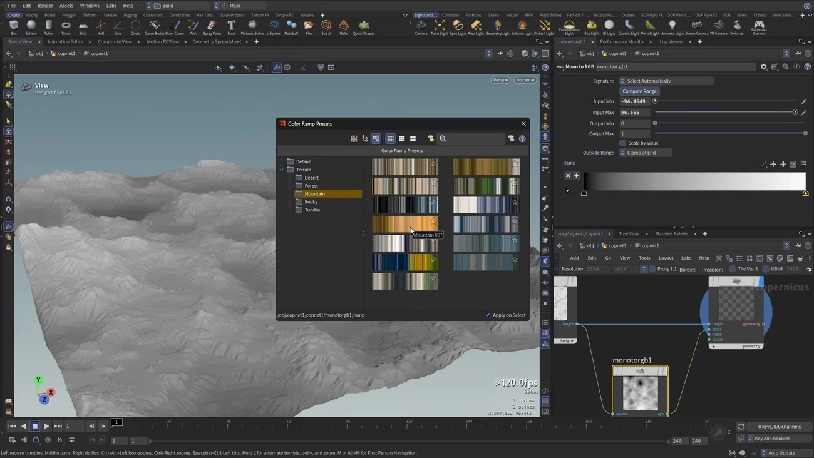
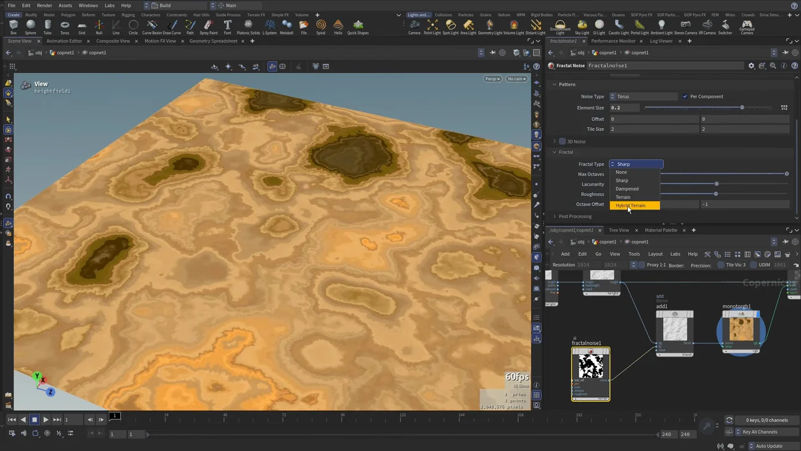

Copernicus で地形を作る — Height Field をレイヤーとして扱う
出典: Houdini 22 | How to Create Terrains in COPs | Utilize Height Fields （SideFX 公式「Houdini 22 How-To」の1本 / Houdini 22 / 12:25 / 英語）。 このページは、上記の動画を見ながら自分用にまとめた日本語の学習メモです。SideFX 公式の翻訳ではありません。
SOP の Height Field と何が違うのか
考え方はほぼ同じです（HF Noise → Terrace → Erode → Strata → Visualize）。
Copernicus 版の利点は個々のレイヤーをもっと細かく制御できることで、 この回の最後にその威力が出ます — 高さを「色を作る前だけ」いじって、 色と高さの対応をずらすという工作です。
1. 器を作る — Height Field COP Network
/obj で Tab → cop network と打つと2つ候補が出ます。
| 候補 | 中身 |
|---|---|
| COP Network | 全部デフォルト |
| Height Field COP Network | こちらを使います。あらかじめ設定が入っています |
入っている設定は2つです。
- Border を端でクランプするように変更
- canvas を ZX 平面にし、uniform scale を持たせている
この canvas 設定が一番重要な差分です。 地形は上から見下ろす平面なので、canvas の向きが最初から合っている必要があります。
スケールを少し上げて 2km 四方にします（既定は 1km）。他は既定のままでよいです。
Layer ノードが height field の実体
中に入って Layer ノードを置きます。ポイントは
Type Info が height に設定されていることです。
だからグリッドが変形して見えます。それ以外は普通の Copernicus のレイヤーです。
2. 地形を積む
| ノード | この例の設定 |
|---|---|
| HF Noise | 既定値でそのまま良い地形になります。触るなら Amplitude / Element Size（地形の特徴の大きさ）/ Roughness / Octaves（上げると細部が増えます） |
| HF Terrace | 段々を作ります。まず Compute Range を押して高さの min/max を出すと、
どのレベルに段が来るか見えます。下側を 23〜24、上側を 36 前後に |
段の大きさに変化をつけるには Random Step を 1 に、Step Seed は 56（講師の好み）、Global Seed も振ります | |
| HF Erode | 自然にします。段差が消えるように思えますが消えません — 侵食後も平らな面として残り、Terrace 無しよりずっと自然になります |
| HF Strata | 細かい段を戻します。Amplitude 10（はっきり出す）、
Element Size 340〜350（大きめの特徴に）、Strata Size 15（尾根の間隔を空ける） |
Terrace → Erode → Strata という順番の意味が面白いところです。 段を付けて、侵食で崩して、また細かい段を戻す。 オン／オフで見比べると、Terrace があったほうが侵食の結果も自然になるのが分かります。
これで「アメリカ南西部の砂漠」的な、侵食＋層状の見た目になります。
注意: レイヤーは size reference 入力に入ります。 接続が点線なのは参照であってパススルーではないということです。 実質は新しいレイヤーが作られています。
3. 色を付ける
- HF Visualize を置きます。出力はジオメトリで、 入力に height / color / mask / layers を持ちます。この時点では色が無いので見た目は変わりません
- 間に Mono to RGB を挟みます。高さを入れ、Compute Range を押して ランプを実際の高さ範囲にフィットさせ、RGB 出力を HF Visualize の color に繋ぎます
- 既定は白黒なので、ランプのプリセットのフォルダを開きます

Terrain の下に Desert / Forest / Mountain / Rocky / Tundra があります。 この回は Mountain 007 を使っています。
4. 色と高さの1:1対応を崩す（この回の要点）
プリセットのままだと色が高さに完全に張り付いています。 横から見ると、同じ標高がぜんぶ同じ色になっていて不自然です。
直し方が Copernicus らしくて良いのです。Mono to RGB に入る前の高さだけをいじります。
addノードを挟みます- Fractal Noise を足します。これはただのレイヤーなので、素直に足せます
- Amplitude を
60くらいまで上げます（実際の高さの差として見える量に） - Element Size を
0.2に（細かすぎない大きめのノイズに） - fractal の種類を terrain fractal に変えます（height field の性格に近づけるため）

ここで大事なのが「見えている高さは気にしなくてよい」という点です。 この足したノイズが影響するのは色を決めるための高さだけで、 HF Visualize に渡す実際の高さは別系統です。
結果として色の境界が標高から少しずれて、地形の上を横切るように動きます。 ミュートしてオン／オフを見比べると、 1ノード足しただけで自然さが変わるのが分かります。
「色を決める値と形を決める値を分けられる」のが Copernicus 版の利点で、 この回のタイトルにある「レイヤーを活用する」の意味だと思います。
この回のまとめ
- 器は Height Field COP Network を使います。canvas が ZX 平面に設定済みなのが差分です
- Layer ノードは
Type Infoがheightになっているだけの普通のレイヤーです - 積む順番は HF Noise → Terrace → Erode → Strata。Terrace の段は侵食しても消えません
- Terrace の前に Compute Range を押すと、どの高さに段を置くか決められます
- 色は Mono to RGB → HF Visualize の color。Terrain のランププリセットが用意されています
- 色を決める高さだけにノイズを足せば、色と標高の1:1対応を崩せます。これがこの回の要点です
- 接続が点線なのは参照であってパススルーではありません
作った地形を Solaris でレンダリングする続きは COPs の地形を Solaris でレンダリングする回にあります。 侵食の副産物（debris / sediment / flow）をマスクとして持ち出す話も、そちらに入っています。